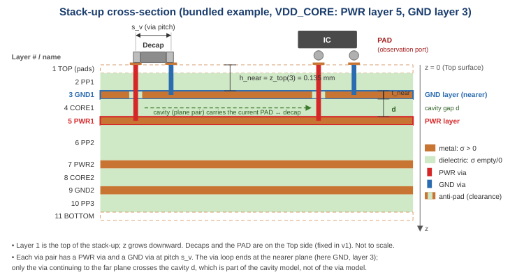

The stack-up describes every layer of the board or substrate from top to bottom: copper layers
(metal) and the dielectrics between them. It is imported from an .xlsx file in the
Stack-up tab (Import…) or with File ▸ Import ▸ Stack-up…. The imported table is stored
inside the project, so the project still opens if the Excel file is moved; Re-import reads the file
again after you changed it.
Other inputs page: Vias · PWR list · Decap list
Bundled file examples/stackup_6L.xlsx, sheet Stackup, header in row 1:
| Layer Number | Layer Name | Thickness(mm) | Conductivity(S/m) | Dk | Df |
|---|---|---|---|---|---|
| 1 | TOP | 0.035 | 5.8E7 | 4.2 | 0.02 |
| 2 | PP1 | 0.1 | 4.2 | 0.02 | |
| 3 | GND1 | 0.035 | 5.8E7 | 4.3 | 0.018 |
| 4 | CORE1 | 0.1 | 4.3 | 0.018 | |
| 5 | PWR1 | 0.035 | 5.8E7 | 4.3 | 0.018 |
| 6 | PP2 | 0.8 | 4.4 | 0.02 | |
| 7 | PWR2 | 0.035 | 5.8E7 | 4.3 | 0.018 |
| 8 | CORE2 | 0.1 | 4.3 | 0.018 | |
| 9 | GND2 | 0.035 | 5.8E7 | 4.2 | 0.02 |
| 10 | PP3 | 0.1 | 4.2 | 0.02 | |
| 11 | BOTTOM | 0.035 | 5.8E7 | 4.2 | 0.02 |

Figure 1 – The example stack-up as a cross-section, with the VDD_CORE plane pair (PWR layer 5, GND layer 3). Metal rows are copper coloured, dielectric rows green.
| Field | Required | Accepted headers (examples) | Content |
|---|---|---|---|
| Layer name | no | Layer Name, layer_name | Free text, shown in tables and messages. |
| Layer number | yes | Layer Number, Layer No., LAYER #, layer_number, Layer Index, Layer, No, # | Integer ≥ 1, unique. 1 = top layer. Rows are sorted by this number. |
| Thickness | yes | Thickness (mm), thickness[um], Thk(mil), t, th | Number > 0. Unit from the header (default mm), see Units. |
| Conductivity | yes (column must exist; cells may be empty) | Conductivity (S/m), Sigma, any header with unit (S/m) | S/m. Filled for metal layers only (copper 5.8E7). Empty, 0, - or n/a for dielectrics. |
| Dk | yes | Dk, DK, Er, εr, epsr, eps, Permittivity, Dielectric Constant | Relative permittivity ≥ 1 for dielectric rows. Ignored for metal rows. |
| Df | yes | Df, tan δ, tand, Loss Tangent, Dissipation Factor | Loss tangent as a plain number between 0 and 1 (e.g. 0.02, not 2 %). Ignored for metal rows. |
The column order does not matter and additional columns (e.g. "Material", "Copper weight") are ignored.
Header texts are matched tolerantly, so files from different CAM tools usually import without editing:
stack; otherwise the sheet that was active when the file was saved.
If that sheet has no recognisable header row (e.g. a cover or notes sheet), the other sheets are tried in workbook order.µ/μ becomes
u, δ becomes d, ε becomes e; spaces, underscores, dots and other
punctuation are removed; text in ( ) or [ ] is taken as the unit. Example:
Thickness (mm) → name thickness, unit mm; tan δ → tand;
Layer No. → layerno.W_XL_DUP_COLUMN.| Header unit | Meaning | Example |
|---|---|---|
none or (mm) | millimetre | 0.035 |
(um), (µm), (micron) | micrometre | 35 → 0.035 mm |
(mil), (mils), (thou) | 1/1000 inch = 0.0254 mm | 1.378 → 0.035 mm |
(in), (inch) | 25.4 mm | |
(m) | metre | 35e-6 |
Numeric cells may be real numbers or text such as "5.8E7" or "0,035" (a comma is
read as decimal point). Formula cells are accepted if Excel stored their calculated value; files produced by
scripts without a cached value give E_XL_FORMULA_NO_VALUE – open and save the file once in Excel.
The Conductivity cell alone decides the layer type:
- or n/a → Dielectric (Dk is required, Df recommended).Check the Type column after import. A dielectric row with a conductivity value by mistake becomes a metal layer, and the PWR/GND pair around it will be reported as having a metal layer in between.
For each PWR net the layers strictly between the PWR layer and its GND layer form the cavity dielectric:
d = sum of the thicknesses of all layers between PWR and GND εr_eff = series combination of the dielectric layers (layers stacked in the field direction) tanδ_eff = matching effective loss tangent
Example: 0.05 mm with εr 4.0 / tanδ 0.020 plus 0.05 mm with εr 3.5 / tanδ 0.010 → d = 0.1 mm, εr_eff = 3.733, tanδ_eff = 0.0147. With a single dielectric (example: VDD_CORE, layer 4) the values are simply d = 0.1 mm, εr = 4.3, tanδ = 0.018.
The via length uses the depth of the nearer plane below the Top surface (z_top column),
see Via length. The conductivity and thickness of the PWR and GND
layers determine the conductor loss of the planes (skin effect).
| Code | Meaning | What to do |
|---|---|---|
E_XL_HEADER_NOT_FOUND | No row in the first 20 rows contains all required columns. The message lists the missing columns and the best candidate row. | Rename the header cells (see Columns) or add the missing Conductivity/Dk/Df column. |
E_XL_NUMBER | A cell that must be numeric contains text that is not a number (cell reference given). | Correct the cell, e.g. remove units typed into the cell (35um). |
E_XL_UNIT | Unknown unit in a header, e.g. Thickness (oz). | Use mm, um, mil, in or m. |
E_XL_FORMULA_NO_VALUE | Formula cell without a stored value. | Open and save the file in Excel. |
W_XL_DUP_COLUMN | Two columns match the same field; the second is ignored. | Rename or delete one column. |
E_STACK_EMPTY | No data rows below the header. | Check the sheet and header row. |
E_STACK_LAYER_NUM | Layer number missing, not an integer, or smaller than 1. | Number the layers 1, 2, 3, … from the top. |
E_STACK_LAYER_DUP | The same layer number appears twice. | Make the numbers unique. |
W_STACK_LAYER_GAP | Numbers are not contiguous (e.g. 1, 2, 4). Rows are sorted and the numbers are kept. | Usually a typo; PWR/GND references use these numbers. |
E_STACK_THICKNESS | Thickness missing, zero or negative. | Enter the thickness. |
E_STACK_DK | Dielectric row without Dk, or Dk < 1. | Enter Dk (typically 3–4.5 for FR-4/ABF). |
W_STACK_DF_MISSING | Dielectric row without Df; 0 (lossless) is used. | Enter Df; losses damp the plane resonances. |
E_STACK_DF | Df below 0 or above 1. | Enter Df as a fraction (0.02), not in percent. |
W_STACK_SIGMA_RANGE | Metal conductivity outside 1e5 … 1e8 S/m. | Check the exponent (copper 5.8E7). |
I_STACK_FILL_DKDF (info) | Dk/Df on metal rows are read as the fill-in (inter-trace) material properties. They are normal stack-up data and are kept in the project, but the PI model does not use them: via inductance depends only on geometry and μ0, and the via barrel capacitance that would use them is tens of fF (negligible below several GHz). | Nothing. |
W_STACK_ADJ_METAL (info) | Two metal rows are adjacent without dielectric between them. | Allowed; check that this is intended. |
W_STACK_METAL_BETWEEN | A metal layer lies between the PWR and GND layers of a PWR net. It is assumed to be cleared (filled with dielectric) in the plane area; its thickness is included in d. | Choose the adjacent GND plane as reference if possible. |
E_STACK_NO_DIELECTRIC | There is no dielectric layer between the PWR and GND layer of a PWR net. | Check the layer numbers in the PWR list. |
|